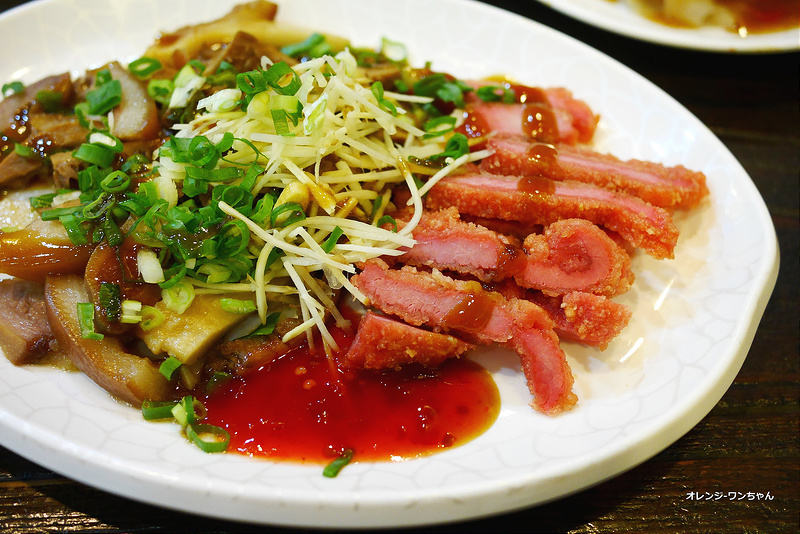

印象深刻的原因除了覺得好吃以外..就是那個非常不親民的高貴價格讓我久久才吃一次.. 不過其實在各地都有相當知名的排骨酥麵店家..像是這家【竹東邱記排骨酥麵】也很有名.. 不過我們來的是竹北店..以一家排骨酥麵可以開到這麼大的規模相當不簡單..
走進這家【竹東邱記排骨酥麵】沒有傳統小麵店的陳舊..眼前是現代化的嶄新裝潢.. 不過兩邊牆面上是許多懷舊的黑白照片..整家店滿滿都是人..明明佔地很大座位又非常多.. 可是竟然還是座無虛席..我倒是第一次知道新竹有這麼家排骨酥麵的名店..聲勢驚人..
會來這家店是因為我弟剛好就住在竹北..這天晚餐剛好他說要帶我吃他還挺喜歡的店.. 我想這至少應該也是竹東在地經營了有數十年的老店了吧..據說新竹市與本店也同樣超人氣.. 明亮的用餐空間其實很寬敞..只是因為塞進的桌椅太多生意太好..所以還是顯得擁擠..
整家店幾乎是人聲鼎沸..聊天都得要加大些聲量才聽得到對方的聲音啊.. 點餐的方式就是自己拿菜單來劃選..然後再自行到櫃檯結帳..餐點內容的選擇很多樣.. 但基本還是不脫離排骨酥的搭配..但不同的是據說蝦仁肉圓也是它們家的招牌之一..
排骨酥麵的搭配種類有飯、有麵有米粉還有粄條倒是很多樣搭配..多半都搭油麵或米粉而已. 至於這價位一碗85元我倒是習以為常了..要是一碗賣50元銅板價我才可能會驚訝! 但畢竟都遠道新竹..還在意那一碗價錢貴不貴不嘗鮮一下也實在是說不過去啊..

結果端上來好大一碗..比豐原廟東的還大碗..但是兩家店的價位卻是差不多.. 先不說份量..湯裡面的排骨酥肉也是不少塊..特別的是還有大塊芋頭在裡邊.. 先說湯頭..喝起來同樣是帶著甘醇的甜味..但卻少了廟東那碗的油膩感..不過稍甜些倒是..
只是整個香氣的厚度喝起來還是爽口不膩..我幾乎就把整碗湯喝完了我的媽呀！光喝就飽了.. 而點綴的香菜也是個靈魂..沒有這個傳統的香氣襯托感覺湯頭就少了一味不對勁啊.. 當然裡面的重點我竟然不是擺在排骨酥上面..而是那兩塊吸盡湯頭鮮美的芋頭啊..
就跟吃佛跳牆甕底的芋頭一樣..但它不軟爛卻鬆綿..然後滲出湯頭的甜..芋頭才是主角啊XD. 至於排骨酥肉是當然也不錯..每碗有給了四塊半還是五塊的數量..當然大小塊不一定就是.. 肉質軟嫩外層麵衣早已被湯頭沁軟..吃過你就會知道難怪這家店生意可以這麼好必出有因.. 雖然不少人也覺得它價位一路上漲不少..但以我這外地人來說這樣份量其實樂勝不少店啊.. (結果吃完才知道應該要點乾的會更好吃..看來只有再二訪了啊!)
外地的蝦仁肉圓我不常吃..因為怎麼吃都覺得沒有台南用火燒蝦的蝦仁肉圓好吃.. 不過台南的肉圓多半是屬吃巧不吃飽..結果這家邱記的肉圓讓我有小小的意外.. 每個肉圓個頭不小..裡面的肉餡也夠飽實..蝦仁的表現還算可以..不過整個料好實在.. 醬汁是用醬油膏、辣醬跟蒜蓉去搭配..中規中矩..但肉圓本身我是挺喜歡..很值得試試..
這是我弟去點的..所以也不知道每樣多少錢..但是切來好大一盤兩個人應付有點吃力.
但是裡面的紅糟肉很好吃..外層麵衣帶點微酥..入口咀嚼有紅糟的香氣..我還蠻喜歡的.. 其他幾味像牛肚跟豬頭皮也都不錯吃..只是它們家用的醬油膏鹹度比較高有些搶味了..
這道說實話當天覺得不太有特色..所以現在也記不太清楚味道如何..
我想【竹東邱記排骨酥麵】應該是已經大家耳熟能詳的店了..我現在才吃到也算是湊到熱鬧.. 畢竟新竹實在是太少走訪..所以能認識在地的美食美味機會實在有限..偶爾才吃到這麼幾家.. 每次總會再次覺得新竹也不是如傳聞的都沒有美食..只是有待再更加多多發掘這樣.. 有機會的話當然還是想自己再走訪竹東中央市場本店去試試..簡單心得給大家參考囉!!

引自:http://www.orange-dog.com/2015/02/zhubeichonoodle.html